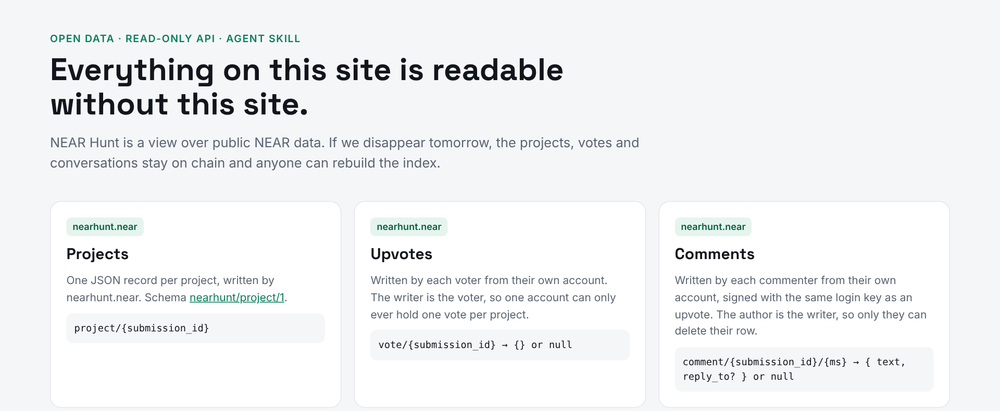
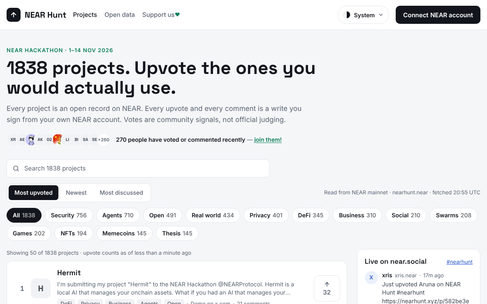
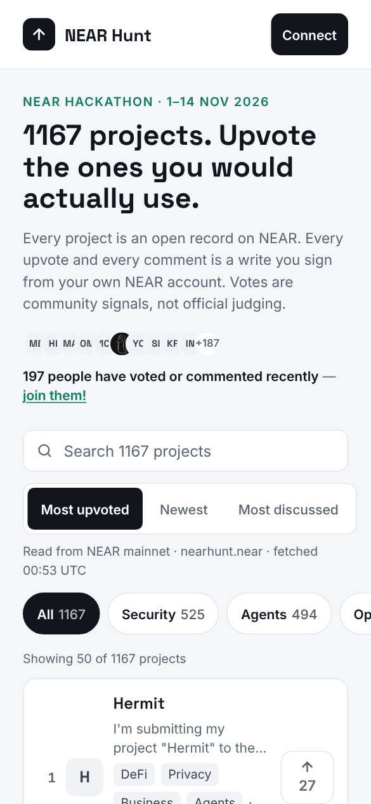
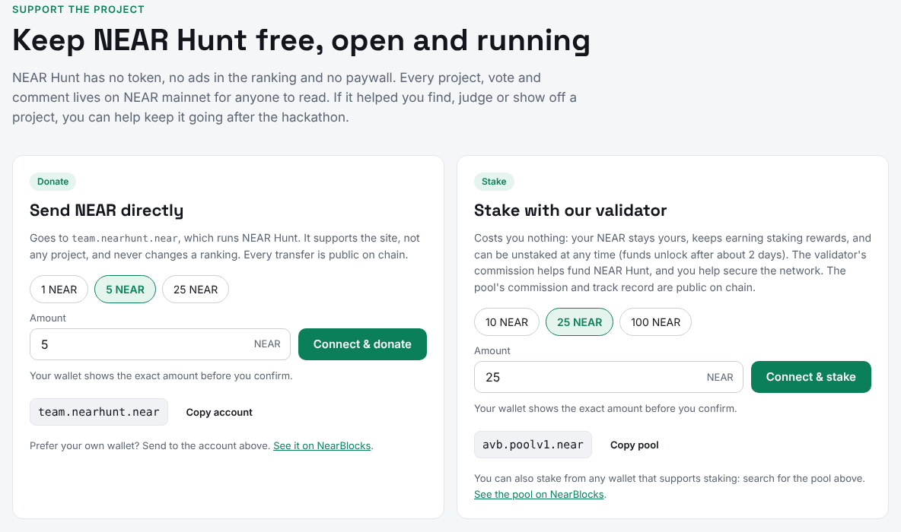

NEAR Hunt
NEAR Hackathon · Open Innovation · 1–14 Nov 2026
A human-first discovery and community voting layer for the NEAR ecosystem, built on NEAR Social and open data.
nearhunt.xyz
Live demo · [Presenter name]
The problem
No way to search, filter by track or sort by what people actually like.
Builders couldn’t discuss each other’s work, and users had no way to say “I’d use this”.
Two weeks of work by hundreds of builders leaks away when the hackathon ends.
Objectives for this hack
01
Drive adoption of a NEAR product: log in with your NEAR account, show near.social profiles, and send people back to near.social to share.
02
Open data and FastData KV: every project, vote and comment is a plain row on mainnet. No smart contract.
03
Make new projects discoverable and build a sense of community through upvotes, comments and builder claims.
04
It should feel like a normal app: one wallet approval, then no pop-ups. Fast, themed and works on a phone.
Not a demo waiting for users
287
NEAR accounts signed upvotes from their own wallets
395 vote rows on chain
58
accounts discussing each other’s work
70 comment rows
48
#nearhunt posts on near.social
from 38 accounts
2,130
project records on mainnet
36 corrections filed by builders
Part 2 · The open data approach
NEAR Hunt is a view over public NEAR data. If nearhunt.xyz vanished tomorrow, the projects, votes and conversations would stay on chain, and anyone could rebuild the index.
Open data · FastData KV
project/{id}
written by nearhunt.near
One versioned JSON record per project, schema nearhunt/project/1.
vote/{id}
written by the voter
The voter is the account that signed the row, so one account holds one vote.
comment/{id}/{ms}
written by the author
Signed with the same login key. Only the author can delete their own.
maker/{id}
written by the builder
Links a NEAR account to a project, shown only after a GitHub check.
Nobody can vote as you. Identity is the row’s signer, never a name in the data.
Nothing to deploy or audit. Each write is one __fastdata_kv call.
Open data · how it flows
Signs a vote or comment from your own account
A __fastdata_kv row on nearhunt.near, public for good
kv.main.fastnear.com serves it back. No custom indexer.
Read by
nearhunt.xyz
Public JSON API
AI agents
Anyone with curl
curl -s "https://kv.main.fastnear.com/v0/latest/nearhunt.near/nearhunt.near/project/{id}"
Open data · agent-ready
Read-only JSON API
List, sort, filter and page through projects, votes and discussions. No key, no wallet.
A SKILL.md for agents
One file tells an AI agent every endpoint and how to check each record against the chain.
Read-only by design
Agents can browse and verify. They can’t vote or write for anyone.

“Read nearhunt.xyz/SKILL.md and shortlist ten projects worth investigating.”
Part 3 · UI/UX
No wallet pop-ups
Approve once at login. Votes and comments sign quietly after that.
Find things fast
Search, track filters and sorts, all kept in a URL you can share.
Four themes
Light, dark and two playful ones, all checked for contrast.
Works on a phone
The same directory and voting, in your pocket.


Community · builders own their pages
1
“Claim this project” on any listing with a repository. No scopes requested.
2
If you own it or can push to it, the page says so. The token is revoked straight after the check.
3
Optional: one signed maker/ row ties your account to your project.
22
NEAR accounts linked to a project
36
corrections filed by builders to their own listings
0
AI-written descriptions: builders’ own words only
Support us · nearhunt.xyz/support
Donate NEAR
Send to team.nearhunt.near from your own wallet. Every transfer is public on chain.
Stake with our validator
Stake with avb.poolv1.near. Your NEAR stays yours and keeps earning; the commission funds the site.
Or help for free
Upvote, comment, share on near.social, or build on the open data.
No token, no paywall, and no money ever touches a ranking.

Roadmap
Live · 1–14 Nov
Directory, upvotes and comments on mainnet. near.social profiles and sharing. Open data, API and SKILL.md. Builder claims. Support page.
Next · late Nov – Dec
Any NEAR account can list a project, any day. Daily and weekly launch views. Makers tell their own story.
Next · 2027
Publish nearhunt/project/1 for wallets, explorers and grant programs. Every NEAR hackathon in one place.
What we won’t do: tokens for votes, paid ranking, or agents writing on anyone’s behalf.
NEAR Hunt
Try it now
The app
nearhunt.xyz
The data
nearhunt.xyz/open-data
The code
github.com/satojandro/near-hunt
Part 1 · NEAR Social integration
Your near.social identity, everywhere on NEAR Hunt.
We don’t build another social silo. We bring people to the one NEAR already has, and send them back.